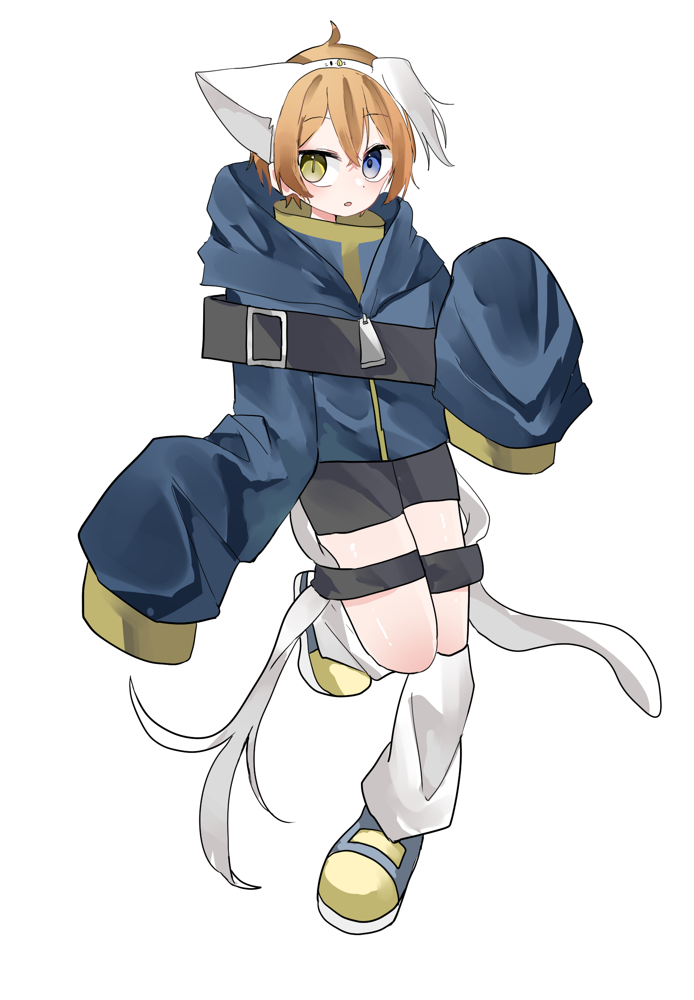

ドルト

About
ネットで主にイラストを描く活動を行なっています。
tiktokでの配信も行なっています。
Profile
ドルト
福岡県
まだプログラミングは勉強中です。
Skills
OS
Windows, Ubuntu など
Engine, Frameworks
Node.js, Express など
Tool, MiddleWare
Git, PostgreSQL など
資格
英検三級
Works
イラストの経歴、活動拠点
X
FanBox
skeb
作った作品
作品 1
作品 2
Contact
連絡先
Mail
History
N高等学校卒業、
2018 年
学校法人角川ドワンゴ学園
N高等学校
卒業
好きな動画
X
Tweets by Doruto721
Open Processing